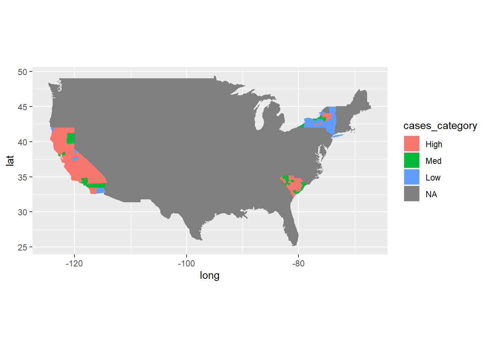
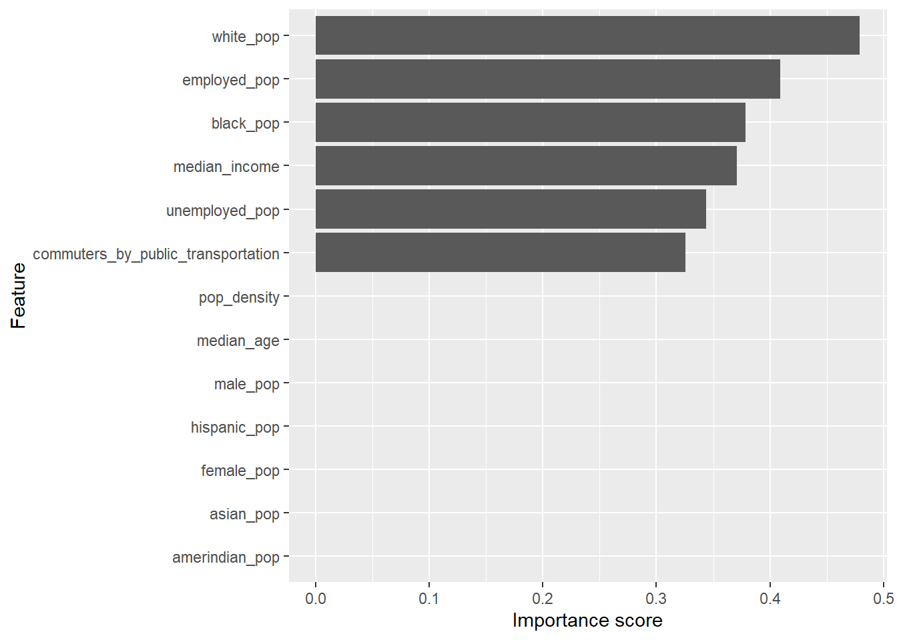
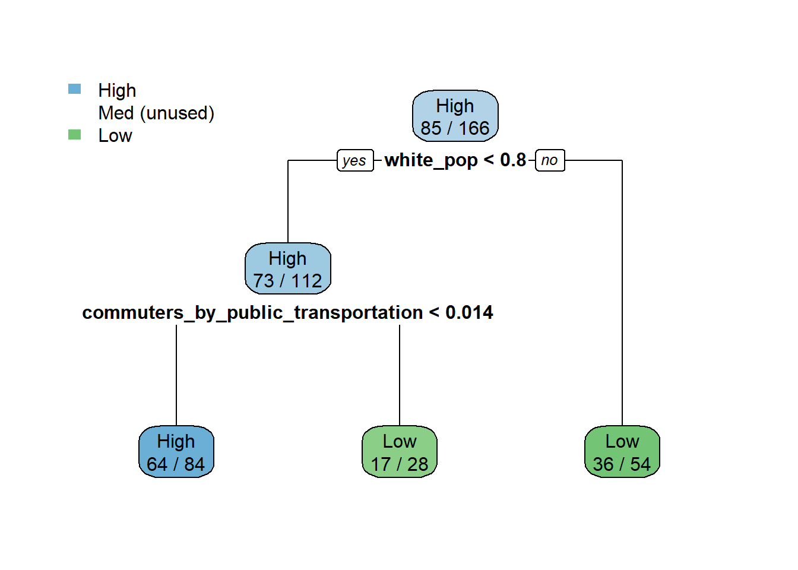
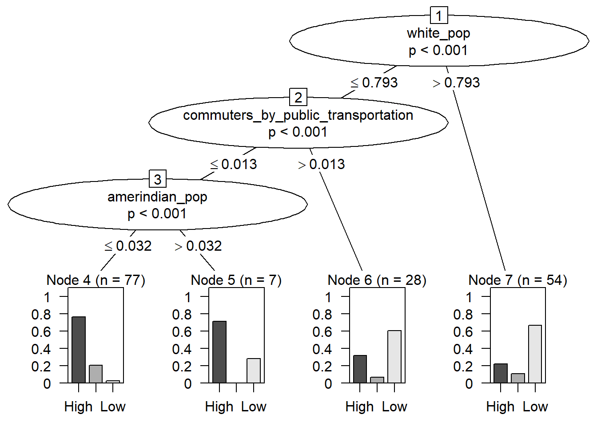
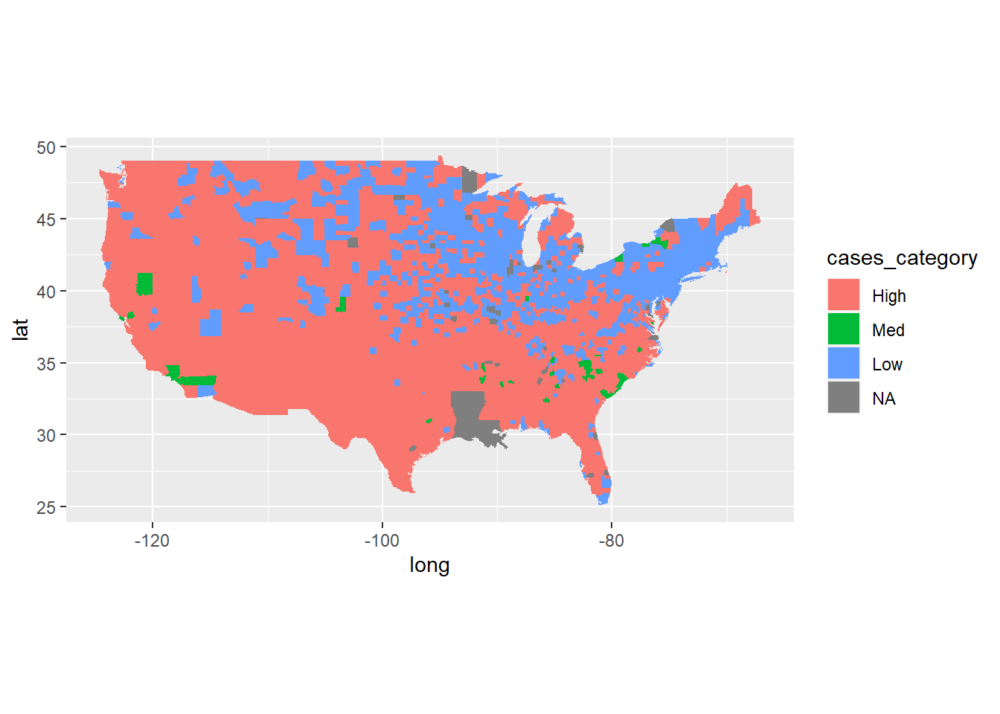

#In order for this R script to run effectively, the “Peak” R script has to be run. This model depends on the results of the Peak classification of counties as High, Medium or Low risk based on a county’s most recent peak in COVID-19 deaths and cases.
library(tidyr)
library(dplyr)
library(stringr)
library(ggplot2)
library(readr)
library(zoo)
library(scales)
library(sf)
library(urbnmapr)
library(plotly)
library(tidyverse)
library(mlbench)
library(caret)usfacts_data <- read.csv("census_data_0718.csv")
cases <- counties_sf
pop_density <- read.csv("USA_Population_Density.csv")
names(cases)[7] <- "county_fips_code"
cases_new <- merge(usfacts_data, cases, by="county_fips_code")
dim(cases_new)## [1] 3142 288cases_new <- merge(cases_new, pop_density, by="county_fips_code")
#Make characters factor for analysis
cases_new <- cases_new %>% mutate_if(is.character, factor)
dim(cases_new)## [1] 3140 294cases_sel <- cases_new %>% select(county_name.x, state,total_pop, pop_density,
male_pop, female_pop, median_age, white_pop,
black_pop, asian_pop, hispanic_pop, amerindian_pop,
commuters_by_public_transportation, median_income,
employed_pop, unemployed_pop, cases_category)
summary(cases_sel)## county_name.x state total_pop
## Washington County: 30 TX : 254 Min. : 74
## Jefferson County : 25 GA : 159 1st Qu.: 10952
## Franklin County : 24 VA : 133 Median : 25704
## Lincoln County : 23 KY : 120 Mean : 102224
## Jackson County : 22 MO : 115 3rd Qu.: 67501
## Madison County : 19 KS : 105 Max. :10105722
## (Other) :2997 (Other):2254
## pop_density male_pop female_pop
## Min. : 0.0 Min. : 39 Min. : 35
## 1st Qu.: 17.1 1st Qu.: 5518 1st Qu.: 5464
## Median : 45.5 Median : 12808 Median : 12887
## Mean : 262.8 Mean : 50321 Mean : 51903
## 3rd Qu.: 115.6 3rd Qu.: 33510 3rd Qu.: 34114
## Max. :70148.7 Max. :4979641 Max. :5126081
##
## median_age white_pop black_pop
## Min. :21.60 Min. : 18 Min. : 0.0
## 1st Qu.:37.90 1st Qu.: 8112 1st Qu.: 95.0
## Median :41.20 Median : 20215 Median : 761.5
## Mean :41.16 Mean : 62827 Mean : 12562.2
## 3rd Qu.:44.23 3rd Qu.: 53551 3rd Qu.: 5397.5
## Max. :66.40 Max. :2676982 Max. :1226134.0
##
## asian_pop hispanic_pop amerindian_pop
## Min. : 0.0 Min. : 0 Min. : 0.0
## 1st Qu.: 31.0 1st Qu.: 323 1st Qu.: 24.0
## Median : 138.5 Median : 1028 Median : 95.0
## Mean : 5410.7 Mean : 17997 Mean : 662.0
## 3rd Qu.: 713.8 3rd Qu.: 4874 3rd Qu.: 347.2
## Max. :1442577.0 Max. :4893579 Max. :64102.0
##
## commuters_by_public_transportation median_income
## Min. : 0.0 Min. : 19264
## 1st Qu.: 6.0 1st Qu.: 41126
## Median : 33.0 Median : 48073
## Mean : 2422.9 Mean : 49765
## 3rd Qu.: 145.2 3rd Qu.: 55771
## Max. :735534.0 Max. :129588
##
## employed_pop unemployed_pop cases_category
## Min. : 39 Min. : 0 High:1842
## 1st Qu.: 4555 1st Qu.: 286 Med : 544
## Median : 10710 Median : 745 Low : 754
## Mean : 47960 Mean : 3363
## 3rd Qu.: 29548 3rd Qu.: 2102
## Max. :4805817 Max. :406426
## table(complete.cases(cases_sel))##
## TRUE
## 3140cases_sel <- cases_sel %>% mutate(
female_pop = female_pop / total_pop,
male_pop = male_pop / total_pop,
white_pop = white_pop / total_pop,
black_pop = black_pop / total_pop,
asian_pop = asian_pop / total_pop,
hispanic_pop = hispanic_pop / total_pop,
amerindian_pop = amerindian_pop / total_pop,
commuters_by_public_transportation = commuters_by_public_transportation/ total_pop,
employed_pop = employed_pop / total_pop,
unemployed_pop = unemployed_pop / total_pop,
)
summary(cases_sel)## county_name.x state total_pop
## Washington County: 30 TX : 254 Min. : 74
## Jefferson County : 25 GA : 159 1st Qu.: 10952
## Franklin County : 24 VA : 133 Median : 25704
## Lincoln County : 23 KY : 120 Mean : 102224
## Jackson County : 22 MO : 115 3rd Qu.: 67501
## Madison County : 19 KS : 105 Max. :10105722
## (Other) :2997 (Other):2254
## pop_density male_pop female_pop
## Min. : 0.0 Min. :0.4190 Min. :0.1917
## 1st Qu.: 17.1 1st Qu.:0.4890 1st Qu.:0.4942
## Median : 45.5 Median :0.4960 Median :0.5040
## Mean : 262.8 Mean :0.5008 Mean :0.4992
## 3rd Qu.: 115.6 3rd Qu.:0.5058 3rd Qu.:0.5110
## Max. :70148.7 Max. :0.8083 Max. :0.5810
##
## median_age white_pop black_pop
## Min. :21.60 Min. :0.006354 Min. :0.000000
## 1st Qu.:37.90 1st Qu.:0.651267 1st Qu.:0.006043
## Median :41.20 Median :0.842359 Median :0.021296
## Mean :41.16 Mean :0.768057 Mean :0.089016
## 3rd Qu.:44.23 3rd Qu.:0.929511 3rd Qu.:0.098830
## Max. :66.40 Max. :1.000000 Max. :0.869207
##
## asian_pop hispanic_pop amerindian_pop
## Min. :0.000000 Min. :0.00000 Min. :0.000000
## 1st Qu.:0.002710 1st Qu.:0.02053 1st Qu.:0.001221
## Median :0.005766 Median :0.03982 Median :0.002704
## Mean :0.013209 Mean :0.09125 Mean :0.017563
## 3rd Qu.:0.012262 3rd Qu.:0.09289 3rd Qu.:0.006359
## Max. :0.418079 Max. :0.99185 Max. :0.822237
##
## commuters_by_public_transportation median_income
## Min. :0.0000000 Min. : 19264
## 1st Qu.:0.0004087 1st Qu.: 41126
## Median :0.0013915 Median : 48073
## Mean :0.0043925 Mean : 49765
## 3rd Qu.:0.0032615 3rd Qu.: 55771
## Max. :0.3194996 Max. :129588
##
## employed_pop unemployed_pop cases_category
## Min. :0.1017 Min. :0.00000 High:1842
## 1st Qu.:0.3960 1st Qu.:0.02152 Med : 544
## Median :0.4429 Median :0.02822 Low : 754
## Mean :0.4384 Mean :0.02877
## 3rd Qu.:0.4861 3rd Qu.:0.03494
## Max. :0.7326 Max. :0.12619
## cases_sel %>% pull(cases_category) %>% table()## .
## High Med Low
## 1842 544 754cases_sel %>% group_by(state) %>%
summarize(high_pct = sum(cases_category == "High")/n()) %>%
arrange(desc(high_pct))## `summarise()` ungrouping output (override with `.groups` argument)## # A tibble: 51 x 2
## state high_pct
## <fct> <dbl>
## 1 TN 0.853
## 2 WI 0.833
## 3 MO 0.826
## 4 CA 0.810
## 5 MS 0.780
## 6 OK 0.766
## 7 KY 0.75
## 8 ID 0.727
## 9 WA 0.718
## 10 SC 0.717
## # ... with 41 more rowscases_train <- cases_sel %>% filter(
state == "NY" |
state == "CA" |
state == "SC"
)
cases_train %>% pull(cases_category) %>% table()## .
## High Med Low
## 85 24 57counties <- as_tibble(map_data("county"))
counties <- counties %>%
rename(c(county = subregion, state = region)) %>%
mutate(state = state.abb[match(state, tolower(state.name))]) %>%
select(state, county, long, lat, group)
counties ## # A tibble: 87,949 x 5
## state county long lat group
## <chr> <chr> <dbl> <dbl> <dbl>
## 1 AL autauga -86.5 32.3 1
## 2 AL autauga -86.5 32.4 1
## 3 AL autauga -86.5 32.4 1
## 4 AL autauga -86.6 32.4 1
## 5 AL autauga -86.6 32.4 1
## 6 AL autauga -86.6 32.4 1
## 7 AL autauga -86.6 32.4 1
## 8 AL autauga -86.6 32.4 1
## 9 AL autauga -86.6 32.4 1
## 10 AL autauga -86.6 32.4 1
## # ... with 87,939 more rowscounties_all <- counties %>% left_join(cases_train %>%
mutate(county = county_name.x %>% str_to_lower() %>%
str_replace('\\s+county\\s*$', '')))## Joining, by = c("state", "county")ggplot(counties_all, aes(long, lat)) +
geom_polygon(aes(group = group, fill = cases_category)) +
coord_quickmap() 
library(FSelector)
cases_weight <- cases_train %>% select(-county_name.x, -state, - total_pop)
cases_weight <- cases_weight %>% chi.squared(cases_category ~ ., data = .) %>%
as_tibble(rownames = "feature") %>%
arrange(desc(attr_importance))
cases_weight## # A tibble: 13 x 2
## feature attr_importance
## <chr> <dbl>
## 1 white_pop 0.479
## 2 employed_pop 0.409
## 3 black_pop 0.378
## 4 median_income 0.371
## 5 unemployed_pop 0.344
## 6 commuters_by_public_transportation 0.325
## 7 pop_density 0
## 8 male_pop 0
## 9 female_pop 0
## 10 median_age 0
## 11 asian_pop 0
## 12 hispanic_pop 0
## 13 amerindian_pop 0ggplot(cases_weight,
aes(x = attr_importance, y = reorder(feature, attr_importance))) +
geom_bar(stat = "identity") +
xlab("Importance score") + ylab("Feature")
subset_tx <- cutoff.k(cases_weight %>% column_to_rownames("feature"), 5)
subset_tx## [1] "white_pop" "employed_pop" "black_pop"
## [4] "median_income" "unemployed_pop"library(rpart)
library(rpart.plot)
#deaths_tx_new <- deaths_tx %>% select(-county_name.x, - total_pop, -state)
cases_train %>% gain.ratio(cases_category ~ ., data = .) %>%
as_tibble(rownames = "feature") %>%
arrange(desc(attr_importance))## # A tibble: 16 x 2
## feature attr_importance
## <chr> <dbl>
## 1 state 0.384
## 2 county_name.x 0.191
## 3 white_pop 0.182
## 4 black_pop 0.153
## 5 employed_pop 0.129
## 6 commuters_by_public_transportation 0.124
## 7 median_income 0.119
## 8 unemployed_pop 0.101
## 9 total_pop 0
## 10 pop_density 0
## 11 male_pop 0
## 12 female_pop 0
## 13 median_age 0
## 14 asian_pop 0
## 15 hispanic_pop 0
## 16 amerindian_pop 0library(caret)
fit_cases <- cases_train %>%
train(cases_category ~ . - county_name.x - state - total_pop,
data = . ,
method = "rpart",
trControl = trainControl(method = "cv", number = 10)
)fit_cases## CART
##
## 166 samples
## 16 predictor
## 3 classes: 'High', 'Med', 'Low'
##
## No pre-processing
## Resampling: Cross-Validated (10 fold)
## Summary of sample sizes: 148, 151, 148, 148, 151, 150, ...
## Resampling results across tuning parameters:
##
## cp Accuracy Kappa
## 0.07407407 0.6421324 0.3570588
## 0.09876543 0.5949020 0.2639575
## 0.29629630 0.5362745 0.1034912
##
## Accuracy was used to select the optimal model using
## the largest value.
## The final value used for the model was cp = 0.07407407.library(rpart.plot)
rpart.plot(fit_cases$finalModel, extra = 2)
varImp(fit_cases)## rpart variable importance
##
## Overall
## employed_pop 100.00
## white_pop 96.50
## amerindian_pop 93.35
## black_pop 76.91
## commuters_by_public_transportation 69.60
## pop_density 54.92
## median_income 52.71
## female_pop 0.00
## asian_pop 0.00
## unemployed_pop 0.00
## male_pop 0.00
## hispanic_pop 0.00
## median_age 0.00ctreeFit_cases <- cases_train %>%
train(cases_category ~ . - county_name.x - state - total_pop,
data = . ,
method = "ctree",
trControl = trainControl(method = "cv", number = 10)
)
ctreeFit_cases## Conditional Inference Tree
##
## 166 samples
## 16 predictor
## 3 classes: 'High', 'Med', 'Low'
##
## No pre-processing
## Resampling: Cross-Validated (10 fold)
## Summary of sample sizes: 150, 149, 149, 151, 150, 149, ...
## Resampling results across tuning parameters:
##
## mincriterion Accuracy Kappa
## 0.01 0.5852124 0.2651942
## 0.50 0.6138399 0.3006090
## 0.99 0.6370425 0.3631517
##
## Accuracy was used to select the optimal model using
## the largest value.
## The final value used for the model was mincriterion = 0.99.plot(ctreeFit_cases$finalModel)
predict(ctreeFit_cases, head(cases_train))## [1] Low High High High Low High
## Levels: High Med LowC45fit_cases <- cases_train %>%
train(cases_category ~ . - county_name.x - state - total_pop,
data = . ,
method = "J48",
trControl = trainControl(method = "cv", number = 10)
)
C45fit_cases## C4.5-like Trees
##
## 166 samples
## 16 predictor
## 3 classes: 'High', 'Med', 'Low'
##
## No pre-processing
## Resampling: Cross-Validated (10 fold)
## Summary of sample sizes: 148, 150, 150, 149, 151, 148, ...
## Resampling results across tuning parameters:
##
## C M Accuracy Kappa
## 0.010 1 0.6490850 0.3800375
## 0.010 2 0.6615441 0.4051125
## 0.010 3 0.6555719 0.3885372
## 0.255 1 0.6418137 0.3779214
## 0.255 2 0.6682026 0.4237151
## 0.255 3 0.6323693 0.3688406
## 0.500 1 0.6418137 0.3779214
## 0.500 2 0.6682026 0.4237151
## 0.500 3 0.6386193 0.3808526
##
## Accuracy was used to select the optimal model using
## the largest value.
## The final values used for the model were C = 0.255 and M
## = 2.C45fit_cases$finalModel## J48 pruned tree
## ------------------
##
## white_pop <= 0.792661
## | commuters_by_public_transportation <= 0.013532
## | | employed_pop <= 0.332063
## | | | black_pop <= 0.051724: Low (3.0)
## | | | black_pop > 0.051724: Med (3.0/1.0)
## | | employed_pop > 0.332063: High (78.0/15.0)
## | commuters_by_public_transportation > 0.013532
## | | black_pop <= 0.08605
## | | | white_pop <= 0.666508: High (9.0/1.0)
## | | | white_pop > 0.666508: Low (3.0/1.0)
## | | black_pop > 0.08605: Low (16.0/1.0)
## white_pop > 0.792661
## | black_pop <= 0.010904
## | | pop_density <= 56.7: High (9.0/1.0)
## | | pop_density > 56.7
## | | | pop_density <= 99.9: Low (3.0)
## | | | pop_density > 99.9: High (2.0/1.0)
## | black_pop > 0.010904
## | | median_income <= 45332: Med (3.0/1.0)
## | | median_income > 45332: Low (37.0/4.0)
##
## Number of Leaves : 11
##
## Size of the tree : 21#Remove county name since it has too many levels which will make the code really slow
rulesfit_cases <- cases_train %>%
train(cases_category ~ . - county_name.x - state - total_pop,
data = . ,
method = "PART",
trControl = trainControl(method = "cv", number = 10)
)
rulesfit_cases## Rule-Based Classifier
##
## 166 samples
## 16 predictor
## 3 classes: 'High', 'Med', 'Low'
##
## No pre-processing
## Resampling: Cross-Validated (10 fold)
## Summary of sample sizes: 148, 149, 148, 150, 150, 150, ...
## Resampling results across tuning parameters:
##
## threshold pruned Accuracy Kappa
## 0.010 yes 0.7160948 0.4898707
## 0.010 no 0.6863725 0.4528385
## 0.255 yes 0.7160948 0.4911936
## 0.255 no 0.6863725 0.4528385
## 0.500 yes 0.7160948 0.4911936
## 0.500 no 0.6863725 0.4528385
##
## Accuracy was used to select the optimal model using
## the largest value.
## The final values used for the model were threshold =
## 0.5 and pruned = yes.rulesfit_cases$finalModel## PART decision list
## ------------------
##
## white_pop > 0.792661 AND
## black_pop > 0.010904 AND
## median_income > 45332: Low (37.0/4.0)
##
## commuters_by_public_transportation <= 0.013532 AND
## employed_pop > 0.332063 AND
## white_pop <= 0.947953: High (89.0/19.0)
##
## male_pop <= 0.486781: Low (13.0)
##
## male_pop <= 0.552539 AND
## asian_pop <= 0.102878 AND
## male_pop <= 0.50093: Low (8.0/1.0)
##
## male_pop <= 0.536241 AND
## hispanic_pop <= 0.449549: High (13.0)
##
## black_pop <= 0.050865: Low (3.0)
##
## : Med (3.0)
##
## Number of Rules : 7randomForestFit_cases <- cases_train %>%
train(cases_category ~ . - county_name.x - state - total_pop,
data = . ,
method = "rf",
trControl = trainControl(method = "cv", number = 10)
)
randomForestFit_cases## Random Forest
##
## 166 samples
## 16 predictor
## 3 classes: 'High', 'Med', 'Low'
##
## No pre-processing
## Resampling: Cross-Validated (10 fold)
## Summary of sample sizes: 149, 150, 149, 148, 150, 151, ...
## Resampling results across tuning parameters:
##
## mtry Accuracy Kappa
## 2 0.7347712 0.5230978
## 7 0.7229657 0.5094016
## 13 0.7160212 0.5002267
##
## Accuracy was used to select the optimal model using
## the largest value.
## The final value used for the model was mtry = 2.nnetFit_case <- cases_train %>% train(cases_category ~ . - county_name.x - state - total_pop,
method = "nnet",
data = .,
tuneLength = 5,
trControl = trainControl(method = "cv", number = 10),
trace = FALSE)
nnetFit_case## Neural Network
##
## 166 samples
## 16 predictor
## 3 classes: 'High', 'Med', 'Low'
##
## No pre-processing
## Resampling: Cross-Validated (10 fold)
## Summary of sample sizes: 149, 149, 149, 150, 149, 149, ...
## Resampling results across tuning parameters:
##
## size decay Accuracy Kappa
## 1 0e+00 0.5176471 0.015000000
## 1 1e-04 0.5117647 0.000000000
## 1 1e-03 0.5117647 0.000000000
## 1 1e-02 0.5055147 -0.009923664
## 1 1e-01 0.5117647 0.005102775
## 3 0e+00 0.5235294 0.029388489
## 3 1e-04 0.5176471 0.014388489
## 3 1e-03 0.5055147 -0.009923664
## 3 1e-02 0.5132353 0.063826549
## 3 1e-01 0.5768382 0.160472367
## 5 0e+00 0.5301471 0.043800254
## 5 1e-04 0.5235294 0.033310979
## 5 1e-03 0.5827206 0.169749324
## 5 1e-02 0.6069853 0.278783612
## 5 1e-01 0.5191176 0.081645874
## 7 0e+00 0.5297794 0.045595754
## 7 1e-04 0.5294118 0.043776978
## 7 1e-03 0.5886029 0.210196476
## 7 1e-02 0.5838235 0.206687896
## 7 1e-01 0.5669118 0.189237968
## 9 0e+00 0.5176471 0.018922490
## 9 1e-04 0.5231618 0.033853314
## 9 1e-03 0.5356618 0.088036966
## 9 1e-02 0.5595588 0.161153693
## 9 1e-01 0.5522059 0.170738352
##
## Accuracy was used to select the optimal model using
## the largest value.
## The final values used for the model were size = 5 and
## decay = 0.01.nnetFit_case$finalModel## a 13-5-3 network with 88 weights
## inputs: pop_density male_pop female_pop median_age white_pop black_pop asian_pop hispanic_pop amerindian_pop commuters_by_public_transportation median_income employed_pop unemployed_pop
## output(s): .outcome
## options were - softmax modelling decay=0.01resamps <- resamples(list(
decision = fit_cases,
ctree = ctreeFit_cases,
rules = rulesfit_cases,
randomForest = randomForestFit_cases,
NeuralNet = nnetFit_case,
C45fit = C45fit_cases
))
resamps##
## Call:
## resamples.default(x = list(decision = fit_cases, ctree
## = randomForestFit_cases, NeuralNet = nnetFit_case,
## C45fit = C45fit_cases))
##
## Models: decision, ctree, rules, randomForest, NeuralNet, C45fit
## Number of resamples: 10
## Performance metrics: Accuracy, Kappa
## Time estimates for: everything, final model fitsummary(resamps)##
## Call:
## summary.resamples(object = resamps)
##
## Models: decision, ctree, rules, randomForest, NeuralNet, C45fit
## Number of resamples: 10
##
## Accuracy
## Min. 1st Qu. Median Mean
## decision 0.5333333 0.6117647 0.6666667 0.6421324
## ctree 0.4705882 0.5441176 0.6437500 0.6370425
## rules 0.6250000 0.6666667 0.7187500 0.7160948
## randomForest 0.5882353 0.6920956 0.7416667 0.7347712
## NeuralNet 0.3750000 0.4779412 0.5753676 0.6069853
## C45fit 0.5000000 0.5784314 0.6770833 0.6682026
## 3rd Qu. Max. NA's
## decision 0.6666667 0.7058824 0
## ctree 0.7454044 0.7777778 0
## rules 0.7708333 0.8125000 0
## randomForest 0.7745098 0.8750000 0
## NeuralNet 0.7610294 0.8823529 0
## C45fit 0.7458333 0.8125000 0
##
## Kappa
## Min. 1st Qu. Median Mean
## decision 0.14634146 0.27302632 0.3920346 0.3570588
## ctree 0.06707317 0.21065013 0.3783099 0.3631517
## rules 0.29411765 0.39752164 0.4929577 0.4911936
## randomForest 0.26086957 0.47454420 0.5181159 0.5230978
## NeuralNet -0.11111111 0.01388889 0.1935641 0.2787836
## C45fit 0.11475410 0.29420550 0.4299571 0.4237151
## 3rd Qu. Max. NA's
## decision 0.4262673 0.5086705 0
## ctree 0.5362703 0.6190476 0
## rules 0.5938069 0.6571429 0
## randomForest 0.5823325 0.7714286 0
## NeuralNet 0.5422780 0.7875000 0
## C45fit 0.5380952 0.6756757 0cases_pred <- na.omit(cases_sel)
cases_pred$cases_category <- predict(randomForestFit_cases, cases_pred)
counties_pred <- counties %>% left_join(cases_pred %>%
mutate(county = county_name.x %>% str_to_lower() %>%
str_replace('\\s+county\\s*$', '')))## Joining, by = c("state", "county")ggplot(counties_pred, aes(long, lat)) +
geom_polygon(aes(group = group, fill = cases_category)) +
coord_quickmap()
write.csv(cases_pred, "C:/Users/Starr/Google Drive (starr.corbin@gmail.com)/R/covid19_prediction/cases_predictor_rules.csv")